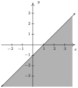
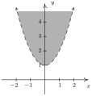
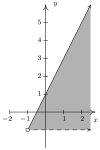
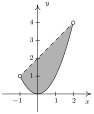
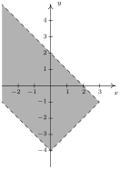
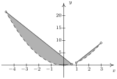

Funções Polinomiais e Racionais
11 Equações e Inequações Lineares, Quadráticas e Modulares
Resumo do capítulo
Com as funções afim, quadrática e modular já estudadas, este capítulo reúne a técnica do diagrama de sinais para resolver as inequações associadas a elas, expressando o conjunto-solução em notação de intervalo.
- $\left[\frac{1}{3}, 3\right]$
- $|7x + 2| > 10$resposta$\left(-\infty, -\frac{12}{7} \right) \cup \left(\frac{8}{7}, \infty\right)$
- $|2x+1| - 5 < 0$resposta$(-3,2)$
- $|2-x| - 4 \geq -3$resposta$(-\infty,1] \cup [3,\infty)$
- $|3x+5| + 2 < 1$respostaNenhuma solução
- $2|7-x| +4 > 1$resposta$(-\infty, \infty)$
- $2 \leq |4-x| < 7$resposta$(-3,2] \cup [6,11)$
- $1 < |2x - 9| \leq 3$resposta$[3, 4) \cup (5, 6]$
- $|x + 3| \geq |6x + 9|$resposta$\left[-\frac{12}{7}, -\frac{6}{5}\right]$
- $|x-3| - |2x+1| < 0$resposta$(-\infty, -4) \cup \left( \frac{2}{3}, \infty\right)$
- $|1-2x| \geq x + 5$resposta$\left(-\infty, -\frac{4}{3} \right] \cup [6, \infty)$
- $x + 5 < |x+5|$resposta$(-\infty, -5)$
- $x \geq |x+1|$respostaNenhuma solução.
- $|2x + 1| \leq 6-x$resposta$\left[ -7, \frac{5}{3}\right]$
- $x + |2x-3| < 2$resposta$\left( 1, \frac{5}{3} \right)$
- $|3-x| \geq x-5$resposta$(-\infty, \infty)$
- $x^{2} + 2x - 3 \geq 0$resposta$(-\infty, -3] \cup [1, \infty)$
- $16x^2+8x+1 > 0$resposta$\left(-\infty, -\frac{1}{4}\right) \cup \left(-\frac{1}{4}, \infty \right)$
- $x^2+9 < 6x$respostaNenhuma solução
- $9x^2 + 16 \geq 24x$resposta$(-\infty, \infty)$
- $x^2+4 \leq 4x$resposta$\left\{2 \right\}$
- $x^{2} + 1 < 0$respostaNenhuma solução
- $3x^{2} \leq 11x + 4$resposta$\left[-\frac{1}{3}, 4 \right]$
- $x > x^{2}$resposta$(0, 1)$
- $2x^2-4x-1 > 0$resposta$\left(-\infty, 1-\frac{\sqrt{6}}{2} \right) \cup \left(1+\frac{\sqrt{6}}{2}, \infty \right)$
- $5x+4 \leq 3x^2$resposta$\left(-\infty, \frac{5 - \sqrt{73}}{6} \right] \cup \left[\frac{5 + \sqrt{73}}{6}, \infty \right)$
- $2 \leq |x^{2} - 9| < 9$resposta{ $\left(-3\sqrt{2}, -\sqrt{11} \right] \cup \left[-\sqrt{7}, 0 \right) \cup \left(0, \sqrt{7} \right] \cup \left[\sqrt{11}, 3\sqrt{2} \right)$}
- $x^{2} \leq |4x - 3|$resposta$\left[-2-\sqrt{7}, -2+\sqrt{7} \right] \cup [1, 3]$
- $x^{2} + x + 1 \geq 0$resposta$(-\infty, \infty)$
- $x^2 \geq |x|$resposta$(-\infty, -1] \cup \left\{ 0 \right\} \cup [1,\infty)$
- $x |x+5| \geq -6$resposta$[-6,-3] \cup [-2, \infty)$
- $(-\infty, 1) \cup \left(2, \frac{3+\sqrt{17}}{2}\right)$
- O lucro, em dólares, feito ao se vender $x$ garrafas de Guaraná Mapinguari é dado por $P(x) = -x^2+25x-100$, para $0 \leq x \leq 35$. Quantas garrafas de guaraná devem ser vendidas para se ter ao menos $\$50$ de lucro?resposta$P(x) \geq 50$ em $[10,15]$. Isso significa que entre 10 e 15 garrafas de guaraná precisam ser vendidas para receber ao menos $\$50$ de lucro.
- Suponha que $C(x) = x^2-10x+27$, $x \geq 0$ representa o custo, em centenas de dólares, para produzir $x$ milhares de canetas. Encontre o número de canetas que podem ser produzidas por não mais que $\$1100$.resposta$C(x) \leq 11$ em $[2,8]$. Isso significa que entre 2000 e 8000 canetas podem ser produzidas sem que o custo exceda $\$1100$.
- A temperatura $T$, em graus Fahrenheit, $t$ horas após as 6 da manhã é dada por $T(t) = -\frac{1}{2} t^2 + 8t+32$, para $0 \leq t \leq 12$. Quando é mais quente que $42^{\circ}$ Fahrenheit?resposta$T(t) > 42$ em $(8-2\sqrt{11}, 8+2\sqrt{11}) \approx (1.37, 14.63)$, que corresponde a entre 7:22 da manhã (1.37 horas após as 6) e 8:38 da noite (14.63 horas após as 6 da manhã). Entretanto, como o modelo é válido somente para $t$, $0 \leq t \leq 12$, restringimos nossa resposta e encontramos que é mais quente que $42^{\circ}$ Fahrenheit das 7:22 da manhã às 6 da tarde.
- A altura acima do solo $h$ em pés de um foguete $t$ segundos após o lançamento é dada por $h(t) = -5t^2+100t$, para $0 \leq t \leq 20$. Quando o foguete está a ao menos $250$ pés do solo? Aproxime sua resposta para duas casas decimais.resposta$h(t) \geq 250$ em $[10-5\sqrt{2}, 10+5\sqrt{2}] \approx [2.93, 17.07]$. Isso significa que o foguete está a pelo menos 250 pés do solo entre 2.93 e 17.07 segundos após o lançamento.
- Se um estilingue é usado para atirar uma pedra diretamente para cima, de uma altura inicial de $2$ metros e com velocidade inicial de $30$ metros por segundo, para que valores de tempo $t$ a pedra estará acima de $35$ metros? Aproxime sua resposta para duas casas decimais.resposta$s(t) = -4.9t^2 + 30t + 2$. $s(t) > 35$ em (aproximadamente) $(1.44, 4.68)$. Isso significa que entre 1.44 e 4.68 segundos após ser lançada, a pedra está acima de 35 pés do solo.
- Que valores de temperatura, em graus Celsius, são equivalentes à faixa de temperatura entre $50^{\circ}F$ e $95^{\circ}F$?respostaDe exercícios anteriores, $C(F) = \frac{5}{9}(F - 32)$ portanto $50 \leq F \leq 95$ se torna $10 \leq C \leq 35$.
- $|x-2| \leq 4$, $[-2,6]$
- Encontre todos os números reais $x$ tais que $3x$ está dentro de $2$ unidades de $-1$.resposta$|3x+1| \leq 2$, $\left[-1, \frac{1}{3}\right]$
- Encontre todos os números reais $x$ tais que $x^2$ está dentro de $1$ unidade de $3$.resposta$|x^2-3| \leq 1$, $[-2, -\sqrt{2} \,] \cup [\sqrt{2}, 2]$
- resposta$|x^2 -4| \geq 7$, $(-\infty, -\sqrt{11} \,] \cup [\sqrt{11}, \infty)$
- A área da superfície $S$ de um cubo de aresta $x$ é dada por $S(x) = 6x^{2}$ para $x > 0$. Suponha que uma indústria deseja fazer cubos de exatamente 42 centímetros quadrados, mas as máquinas disponíveis são velhas e não possuem precisão suficiente. Escreva uma inequação usando valor absoluto que diga que um dado cubo não está mais que 3 centímetros quadrados além ou aquém do valor desejado de 42 centímetros quadrados. Resolva a inequação e escreva sua resposta usando notação de intervalo.respostaResolvendo $|S(x) - 42| \leq 3$, e desprezando as soluções negativas resulta que $\left[\sqrt{\frac{13}{2}}, \sqrt{\frac{15}{2}}\right] \approx [2.550, 2.739]$. A aresta deve ter comprimento entre $2.550$ e $2.739$ centímetros.
- Suponha que $f$ é uma função, $L$ é um número real e $\varepsilon$ é um número positivo. Discuta com seus colegas o que a inequação $|f(x) - L| < \varepsilon$ significa algebricamente e graficamente.
- $~$

- $R = \left\{ (x,y) : y > x^2 +1 \right\}$resposta$~$

- $R = \left\{ (x,y) : -1 < y \leq 2x + 1 \right\}$resposta$~$

- $R = \left\{ (x,y) : x^2 \leq y < x+2 \right\}$resposta$~$

- $R = \left\{ (x,y) : |x|-4 < y < 2-x \right\}$resposta$~$

- $~$
